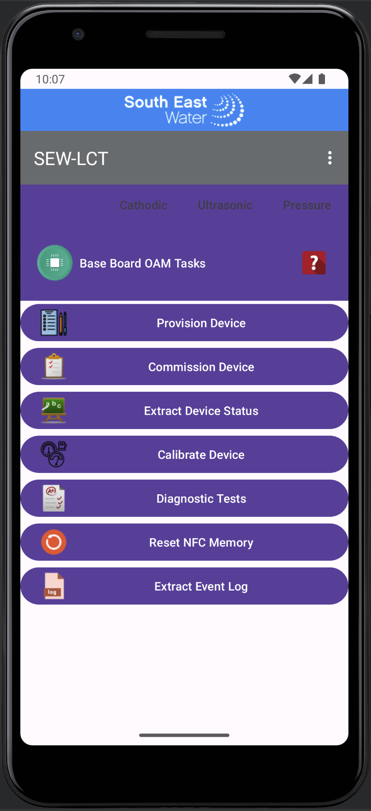
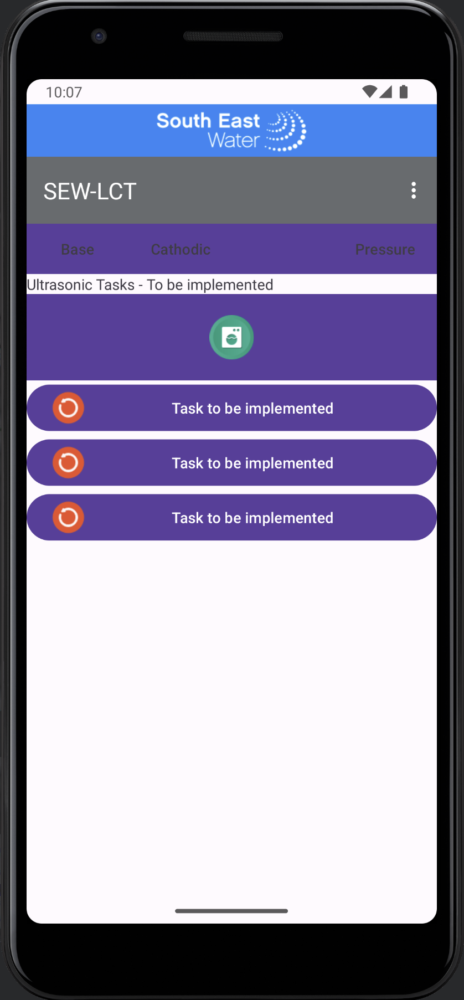
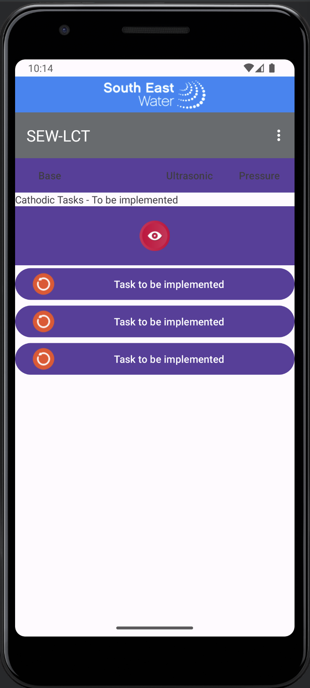
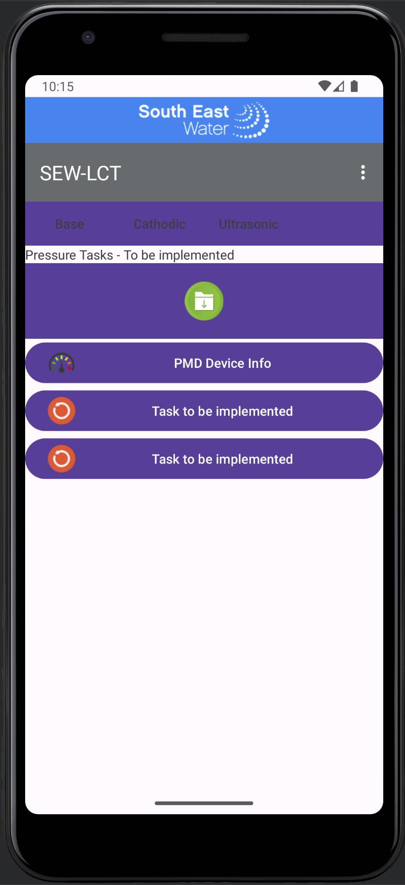

Introduction #
Developed the Local Craft Terminal application to perform Commission, Provision and Diagnostic operations on the South East Water digital meters using the Android/Java to interface and interoperate with the Firmware/C via NFC sensor and Javolution (Java to C Parser and Formatter).
Project Team #
- Duration ~2-3 months and 3 production releases
- 1 x Program Manager / 1 x Project Manager
- 1 x Senior Firmware Engineer was responsible
- Document requirements and specifications
- Provide guidance to Firmware Developers and Testers
- 2 x Senior Firmware Engineer was responsible
- Developed firmware for the digital meter using CoAP/LwM2M/IPSO
- Developed firmware for interface with the android
- 1 x Senior Software Engineer was responsible for 3 production releases
- Set up the Development Environment for NFC using Android Phone with NFC built in and NFC sensor tag
- Set up the Development Environment for the Android to interface with the Firmware using Javolution (open source used to format the Java to C/CPP and parse C/CPP to Java)
- Set up the Development Environment for the Android to engineer with
- Internationalisation with Locale support - UI strings, info/warns/error codes and messages are stored to values/strings
- Android update to date structure and releases to support latest android (I just finished reworking on the porting the sew-lct application to the latest android structure from v4/v7 to androidx at the time write this article)
- The User Interface and Usability was engineered with the knowledge when I worked at the Telecom Research Lab to engineer simple UI and deterministic usability to work on 5-6 inch screen, water/unclean environment and NFC only works with deterministic stable field by tapping
- Base Menu 
- Ultrasonic Menu 
- Cathodic Menu 
- Pressure Menu 
- Work with the Firmware Team to develop the simple protocol to transport the model for local craft terminal application the digital meter firmware.
- the protocol to support the NFC constraints (short message) and intermittent characteristic and behaviour specifies
- single message and multiple messages
- checksum
- send and acknowledge
- the model to support the data/information to be inter-operated specifies
- Device model: Hardware/Firmware/Daughter-Board, Battery, Clock, Network
- Commission/Provision/Diagnostic/Calibrate state and model
- the protocol to support the NFC constraints (short message) and intermittent characteristic and behaviour specifies
- 1 x Testers
- 1 x Manufacture Operators - we use the sew-lct to commission the digital meters before dispatch to South East Water.
Technologies & Development Environments #
- Release 1: I spent about 8 weeks to develop the application before Covid-19. The most difficult components were:
- DevEnv01- Javolution to format and parse message that both Android LCT Application and Firmware can work together
- DevEnv02- Protocol that both work over constraint transport layer
- DevEnv03- User Interface workflow using Tab and Nested Tab concept
- DevEnv04- Engineer the Android Application with International/Locale for all string, Info/Warn/Error messages
- DevEnv05: Engineer the Android components at 2017-2018 (v4/v7 Design and Android) Android technology milestones. I did quick upgrade few days ago to support the modern Android components (AndroidX - I will upgrade my github after asking Extel Technologies and Client permission to partially publish the content - to be provided the github link)
- Application Development
- Release 2: I could not remember anything until few days ago
- Support for other Daughter Boards: Cathodic, Ultrasonic boards
- Release 3
- Support for other Daughter Boards: Pressure board and features Please this is just a sample of the second production release